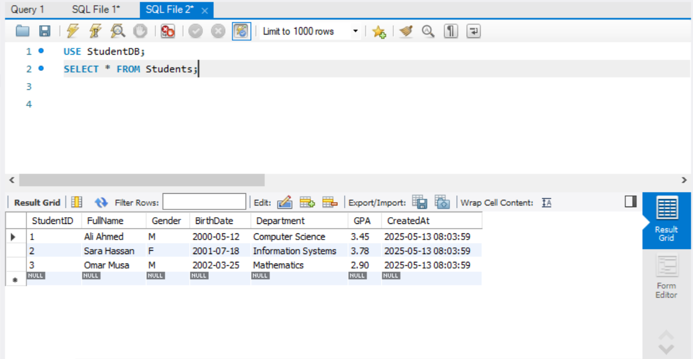
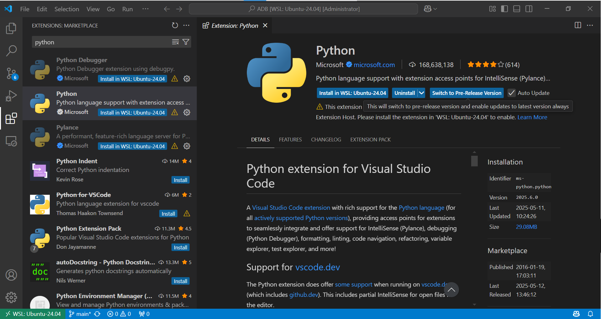

Once you create the database, you will see it listed under the Schemas section on the left panel
Now you can run SQL queries on your new database

USEStudentDB;SELECT*FROMStudents;
What do we mean by Connection and Port?
A database connection is a communication link between a client application (e.g., MySQL Workbench) and the MySQL server. When an application (the client) needs to perform operations such as creating databases, running queries, or retrieving data, it establishes a connection to communicate with the server.
The port is a communication endpoint on your machine. By default, MySQL uses port 3306 to listen for incoming client requests.
In short, a connection is essential to allow your client tools or applications to interact with the MySQL server, run queries, manage data, and exchange information.
Python programming language
We will use the Python programming language to simulate the following:
* Concurrency control algorithms
* Database recovery techniques
Finally we are ready to install the VS code, click on install and wait untail the setup finish
On the Vs code, on the left-hand side, click on extension then in the search bar, write Python select Python microsoft and click on Install as shown below 
Alteranative way to practice:
* Online Postgred server **[supabase](https://supabase.com/)**
* Online Python Editer **[programiz](https://www.programiz.com/python-programming/online-compiler/)**
Assignment: Install MySQL, Create a Database, and Query It
Due Date on 24/5/2025
See the requirement about the structures of the lab here


{kind=link}
{kind=link}


{kind=link}
{kind=link}

{kind=link}
{kind=link}
{kind=link}